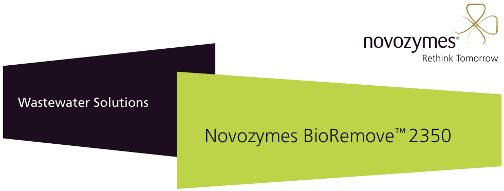
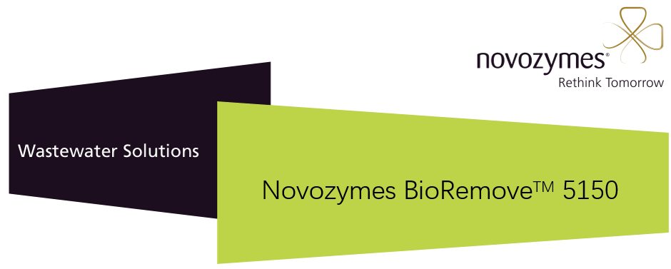
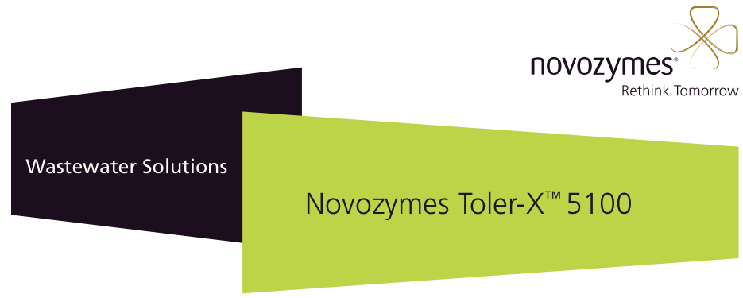
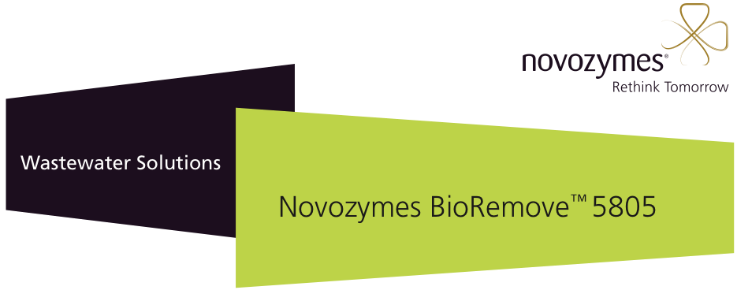
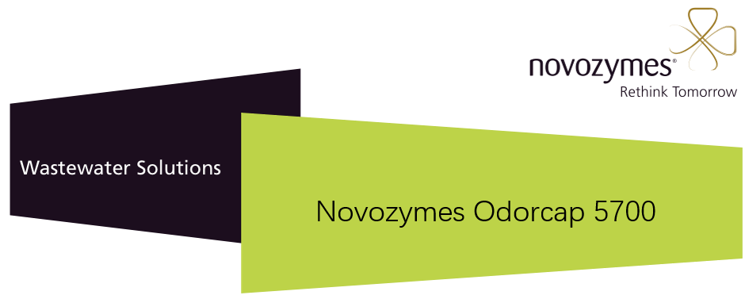

产品中心
丹麦诺维信（Novozymes）生物增效剂全系产品

COD去除菌BioRemove 2350
诺维信生物增效剂BioRemove 2350 中含有微生物组合，是有效的COD去除菌产品。在经过特殊混合后适用于炼油厂和石油化工应用领域。 …

COD去除菌BioRemove 5150
诺维信生物增效剂BioRemove 5150 是含有精选的微生物组合的COD去除剂菌产品，可处理范围高度复杂性污水。BioRemove 51…

低温COD去除菌Toler-X 5100
诺维信生物增效剂Toler-X 5100是一种低温COD去除菌，是一种在低温条件下应用于工业污水处理系统的有益微生物的混合产品。添加 Tol…

氨氮去除菌BioRemove 5805（硝化菌）
诺维信生物增效剂BioRemove 5805是氨氮去除菌，主要活性成份是硝化菌，可通过硝化反应脱去污水中的氨氮。它大量用于采用好氧处理来产生…

除臭菌OdorCap 5700
半点科技（苏州）有限公司专业代理诺维信生物增效剂。除臭菌OdorCap 5700 包含针对硫化合物（其中包括硫化氢和硫醇）的生物除臭微生物混…